MANTENIMIENTO Y REPARACIÓN
servicio con vehículo en marcha
PROCEDIMIENTOS DE SERVICIO GENERALES DEL SISTEMA A/C
Sustitución de juntas tóricas.
Importante: Aunque las juntas tóricas puedan parecer idénticas, es muy importante que se utilicen sólo las juntas tóricas de repuesto recomendadas para el A/A o, de lo contrario, pueden producirse excesivas fugas de refrigerante.
Importante: Deslice siempre la junta tórica sobre la pestaña del tubo para garantizar un asiento y sellado correctos.
Monte las nuevas juntas tóricas de repuesto recomendadas para el aire acondicionado, aprobadas por DAEWOO, siempre que se desmonte una junta o racor, excepto cuando las juntas tóricas se suministren ya colocadas en los nuevos componentes.
Al sustituir las juntas tóricas en un componente del A/A o en una conexión con junta, debe identificarse el diseño de montaje para garantizar la instalación de la junta tórica de repuesto correcta. Algunas conexiones con junta y algunos componentes tienen un diseño de junta tórica "cautiva" que utiliza una ranura para retener dicha junta tórica. Otras no disponen de esa ranura y utilizan una junta tórica "no cautiva" o "estándar". Los procedimientos de montaje y apriete son iguales para ambos diseños, pero las juntas tóricas son diferentes.
Antes del montaje, compruebe que las juntas tóricas y racores no tengan marcas o deformaciones. Las piezas deformadas o melladas deben sustituirse. Si no se utilizan las piezas de repuesto apropiadas y los procedimientos correctos, pueden producirse excesivas fugas de refrigerante.
Manipulación del refrigerante
Precaución: Trabaje siempre en una zona bien ventilada y evite respirar los vapores del refrigerante. Si tiene dificultades para respirar, solicite atención médica inmediatamente. Si el refrigerante entra en contacto con alguna parte del cuerpo, lave la zona afectada con agua. Si aparece erupción o dolor, solicite atención médica.
Los sistemas de A/A contienen refrigerante. El refrigerante es una mezcla química que exige procedimientos especiales de manejo para evitar lesiones personales.
Utilice siempre gafas de seguridad y envuelva un paño limpio alrededor de los racores, las válvulas y las conexiones cuando se realicen trabajos que impliquen abrir el sistema de refrigerante. No suelde ni limpie con vapor las tuberías o componentes del A/A montados en el vehículo o cerca de éstos.
Todos los tambores de refrigerante se envían con un tapón roscado de metal pesado. El propósito del tapón es proteger la válvula y el tapón de seguridad de posibles daños. Es una buena costumbre volver a colocar el tapón después de cada uso del tambor.
Si fuera necesario transportar o llevar un tambor de refrigerante en el vehículo, no lo lleve nunca en el habitáculo.
Manipulación de líneas y accesorios de refrigerante
Aviso: La aplicación de un par de apriete demasiado bajo o demasiado alto al apretar un racor puede dar lugar a una unión floja o a la deformación de piezas de unión. Ambas anomalías pueden provocar fugas de refrigerante.
- Mantenga todas las tuberías de metal sin marcas o torceduras. La existencia de cualquier obstrucción en las tuberías dará lugar a una pérdida de capacidad del sistema.
- No doble nunca un manguito flexible a un radio menor de cuatro veces su diámetro.
- No permita nunca que un manguito flexible llegue a 63,5 mm (2,5 pulgadas) de distancia del colector de escape.
- Revise los manguitos flexibles periódicamente para ver si hay fugas o fragilidad.
- Sustituya las tuberías flexibles por otros nuevos si presentan señales de deterioro o fugas.
- Descargue todo el refrigerante del sistema de refrigeración antes de desconectar un racor de dicho sistema.
- Proceda con sumo cuidado independientemente de lo que midan los manómetros.
- Abra los racores lentamente.
- Mantenga la cara y las manos alejadas del racor para evitar lesiones en caso de que hubiese refrigerante líquido en la tubería.
- Si se observa que hay presión al aflojar un racor, deje que se descargue como se describe en el apartado "Procedimientos de descarga, adición de aceite, evacuación y carga para el sistema de A/A" de esta sección.
- Tape o coloque cinta en la tubería de refrigerante después de abrirla. Esto evitará la entrada de humedad y suciedad que pueda desgastar internamente el compresor u obstruir tuberías en el condensador, el núcleo del evaporador, la válvula de expansión o las rejillas de admisión del compresor.
Importante: Utilice dos llaves apropiadas para conectar los racores provistos de juntas tóricas.
- Refuerce el racor opuesto para evitar la deformación de los tubos de conexión o los componentes.
- Refuerce los racores abocardados en las conexiones provistas de manguito flexible y el acoplamiento al cual se fija con dos llaves para evitar que gire el racor y se dañe el asiento del mismo.
- Mantenga las juntas tóricas y sus asientos en perfectas condiciones. Una rebaba o una partícula de suciedad puede causar una fuga de refrigerante.
- Sumerja las juntas tóricas nuevas en aceite refrigerante de glicol polialcalino (PAG) limpio antes de montarlas.
Mantenimiento de la estabilidad química en el sistema de refrigerante
El funcionamiento eficaz y la duración del sistema de A/A dependen de la estabilidad química del sistema de refrigeración. Cuando materias extrañas, como suciedad, aire o humedad, contaminan el sistema de refrigeración, cambian la estabilidad del refrigerante y del aceite para compresores de glicol polialcalino (PAG). Afectan también a la relación presión-temperatura, reducen el funcionamiento eficaz y, posiblemente, puedan causar corrosión interior y desgaste anormal de las piezas móviles.
Tenga en cuenta las siguientes prácticas para asegurar la estabilidad química del sistema:
- Limpie la suciedad o el aceite que haya en cualquier conexión o cerca de ésta antes de abrir dicha conexión. Esto reducirá las posibilidades de que entre suciedad en el sistema.
- Tape, obture o coloque cinta en ambos lados de una conexión lo antes posible, después de abrirla. Esto evitará que entren suciedad, materias extrañas y humedad.
- Mantenga todas las herramientas limpias y secas, incluso el juego de manómetros del colector y todas las piezas de repuesto.
- Utilice un dispositivo de transferencia y un recipiente limpio para agregar aceite refrigerante PAG. Esto garantizará que el aceite esté tan exento de humedad como sea posible. Consulte el apartado "Procedimientos de descarga, adición de aceite, evacuación y carga para el sistema de aire acondicionado" de esta sección.
- Tenga preparado todo lo que vaya a necesitar cuando abra el sistema de A/A con el fin de realizar todas las operaciones con rapidez. No deje abierto el sistema de A/A durante más tiempo del necesario.
- Vacíe y vuelva a cargar el sistema de A/A que se haya abierto. Consulte el apartado "Procedimientos de descarga, adición de aceite, evacuación y carga para el sistema de aire acondicionado" de esta sección.
Todas las piezas de repuesto han sido deshidratadas y selladas antes de su envío. Deben permanecer selladas hasta justo antes de efectuar las conexiones. Todas las piezas deben mantenerse a temperatura ambiente antes de retirarlas del envoltorio. Esto evita que entre en el sistema la condensación de la humedad del aire. Vuelva a sellar todas las piezas lo antes posible si se han desmontado las tapas pero no ha sido posible efectuar las conexiones de forma inmediata.
Procedimientos para descargar, añadir aceite, evacuar, y cargar para el sistema A/C
Precaución: Utilice sólo depósitos de refrigerante rellenables y que estén autorizados para la estación de carga que se esté utilizando. El uso de otros depósitos puede causar lesiones personales o invalidar la garantía. Consulte las instrucciones del fabricante de la estación de carga.
Precaución: Para evitar lesiones personales, utilice siempre gafas de seguridad y guantes al realizar trabajos relacionados con la apertura del sistema de refrigeración.
En una sola conexión, una estación de carga descarga, evacua y recarga un sistema de aire acondicionado. El filtrado durante el ciclo de recuperación, junto con el filtrado durante el ciclo de evacuación, garantizan un suministro de refrigerante limpio y seco para la carga del sistema de A/A.
Aviso:
- No utilice nunca la estación de carga de R-134a en un sistema cargado con R-12. Los refrigerantes y los aceites no son compatibles con los de otro sistema y nunca deben mezclarse, ni siquiera en cantidades pequeñas. La mezcla de residuos de refrigerante ocasionará daños en el equipo.
- No utilice nunca adaptadores que adapten el tamaño de un racor al de otro. Tal práctica permite la entrada de suciedad, lo que puede causar fallos en el sistema.
Preparación y mantenimiento de la estación de carga
Consulte las instrucciones del fabricante para el procedimiento de preparación inicial y todos los procedimientos de mantenimiento. Existen muchas estaciones de carga disponibles. Todas realizan diversas tareas para descargar el sistema y recuperar el refrigerante, evacuar el sistema, añadir una cantidad determinada de aceite y recargar un sistema de A/A con una cantidad determinada de refrigerante.
Funciones del panel de control
Una estación de carga tendrá controles e indicadores que permitan al operador controlar y supervisar la operación que se esté realizando. Consulte las instrucciones del fabricante para obtener más detalles. En la información se puede incluir:
- El interruptor principal de encendido/apagado: Este interruptor suministra energía eléctrica al panel de control.
- Pantalla: La pantalla muestra el tiempo programado para el vacío y el peso del refrigerante programado para la recarga. Consulte las instrucciones del fabricante para la información de programación.
- Manómetro del colector de baja presión: Este manómetro muestra la presión en el lado de baja del sistema.
- Manómetro del colector de alta presión: Este manómetro muestra la presión en el lado de alta del sistema.
- Controles: Incluye los controles de las diversas funciones.
- Válvula de baja presión: Conecta a la unidad el lado de baja presión del sistema de A/A.
- Indicador de humedad: Muestra si el refrigerante está húmedo o seco.
- Válvula de alta presión: Conecta a la unidad el lado de alta presión del sistema de A/A.
Recuperación del refrigerante
Importante: Utilice sólo un depósito de refrigerante que esté diseñado para la estación de carga que se esté usando. El mecanismo de limitación de exceso de llenado de la unidad se calibra específicamente para su uso con este depósito. Las válvulas del depósito también están fabricadas específicamente para esta unidad.
- Conecte el tubo del lado de alta con el acoplamiento de desconexión rápida al racor del lado de alta del sistema de A/A del vehículo.
- Abra la válvula de acoplamiento después de la conexión.
- Conecte el tubo del lado de baja con el acoplamiento de desconexión rápida al racor del lado de baja del sistema de A/A del vehículo.
- Abra la válvula de acoplamiento después de la conexión.
- Compruebe los manómetros del lado de alta y de baja presión en el panel de control de la unidad para asegurarse de que el sistema de A/A tiene presión. Si no hay presión, no hay refrigerante en el sistema para su recuperación.
Importante: Si no hay refrigerante en el sistema, no continúe con la operación de recuperación. Esto dejaría pasar aire al depósito de recuperación.
- Abra las válvulas de los lados de alta y de baja presión.
- Abra las válvulas de gas y de líquido en el depósito.
- Vacíe el aceite que pueda haber en el separador de aceite.
- Cierre la válvula de drenaje de aceite.
- Conecte la unidad a la salida de tensión adecuada.
- Encienda el interruptor principal de encendido/apagado.
Aviso: Nunca utilice aceite de refrigerante ya usado. Podría dañar el sistema de aire acondicionado. Deseche el aceite de refrigerante donde proceda.
- Comience el proceso de recuperación. Consulte las instrucciones del fabricante para la estación de carga que se esté utilizando.
Importante: Algunos aceites de lubricación PAG para sistemas de A/A pueden eliminarse con el refrigerante durante la recuperación. La cantidad de aceite eliminado varía. La estación de carga separa el aceite del refrigerante y proporciona un medio para determinar cuánto aceite se eliminó. Reponga la misma cantidad de aceite al recargar el sistema. Consulte las instrucciones del fabricante para la estación de carga que se esté utilizando.
- Espere 5 minutos. Compruebe el manómetro de baja presión del panel de control. Si el A/A ha mantenido el vacío, la recuperación está completa.
- Si la presión del manómetro de baja presión sube por encima de cero, hay más refrigerante en el sistema. Recupere el refrigerante adicional. Repita este paso hasta que el sistema mantenga el vacío durante 2 minutos.
Importante: Si el indicador de control señala que el depósito de refrigerante está lleno durante el proceso de recuperación y la unidad se desconecta, monte un depósito vacío para almacenar el refrigerante necesario para los pasos posteriores del proceso. No utilice ningún otro tipo de depósito.
Evacuación
El depósito de la unidad debe contener una cantidad de refrigerante R-134a para la carga. Compruebe la cantidad de refrigerante que hay en el depósito. Si hay menos de 3,6 kg (8 libras) de refrigerante, añada refrigerante nuevo al depósito. Consulte las instrucciones del fabricante para la adición de refrigerante.
- Compruebe que los manguitos de baja y alta presión estén conectados al sistema de A/A. Abra las válvulas de alta y baja presión en el panel de control de la unidad.
- Abra las válvulas de gas y líquido del depósito.
Importante: Consulte las instrucciones del fabricante para la estación de carga que se esté utilizando. Es necesario evacuar el sistema antes de cargarlo con refrigerante nuevo o reciclado.
- Ponga en marcha la bomba de vacío y comience el proceso de evacuación. Los gases no- condensables (aire en su mayor parte) son expulsados automáticamente del sistema durante el proceso de reciclado. Puede oír como se libera la presión.
- Compruebe si hay fugas en el sistema. Consulte las instrucciones del fabricante para la estación de carga que se esté utilizando.
Importante: Cambie frecuentemente el aceite de la bomba de vacío. Consulte las instrucciones del fabricante para la estación de carga que se esté utilizando.
Reposición de la carga de aceite del sistema de aire acondicionado
Todo el aceite eliminado del sistema de A/A durante el proceso de recuperación debe reponerse en este momento.
- Utilice la botella graduada correcta de aceite PAG para el sistema R-134a.
- Utilice la botella graduada correcta de aceite PAG para el sistema R-134a.
Importante:
- Mantenga en todo momento las botellas bien taponadas con el fin de proteger el aceite de la humedad y la suciedad.
- No abra nunca la válvula de inyección de mientras la presión en el sistema de A/A dé positivo. Esto provocará retorno del aceite a través de la salida de la botella. Para esta operación se debe tener el sistema de A/A en vació.
- Nunca deje que el nivel de aceite caiga por debajo del tubo de recogida mientras carga o vuelve a llenar el sistema. Esto permitiría que entrara aire en el sistema de A/A.
- Consulte las instrucciones del fabricante para la estación de carga que se esté utilizando. Añada la cantidad apropiada de aceite PAG al sistema.
- Cierre la válvula cuando la carga de aceite requerida haya entrado en el sistema.
Carga
Importante: Vacíe el sistema de A/A antes de efectuar la carga.
- Cierre la válvula del lado de baja presión del panel de control.
- Abra la válvula del lado de alta presión en el panel de control.
- Consulte las instrucciones del fabricante para la estación de carga que se esté utilizando.
- Introduzca la cantidad de refrigerante necesaria para cargar el A/A. Asegúrese de que está utilizando el sistema de medida correcto (kg., lb)
- Comience el proceso de carga.
Transferencia terminada con éxito
- Cierre la válvula del lado de alta presión en el panel de control de la unidad. Las dos válvulas deben estar cerradas.
- Ponga en marcha el vehículo y el sistema de A/A.
- Deje el motor funcionando hasta que se estabilicen las lecturas de los manómetros de alta presión y baja presión.
- Compare las lecturas con las especificaciones del sistema.
- Compruebe la temperatura de salida del evaporador para asegurarse de que el sistema de A/A está funcionando según las especificaciones.
- Mantenga el A/A funcionando.
- Cierre la válvula de acoplamiento del lado de alta.
- Desconecte el manguito de alta presión del vehículo.
- Abra las válvulas de alta y baja presión en el panel de control.
- El sistema aspirará rápidamente refrigerante de ambos manguitos a través del manguito del lado de baja presión.
- Cierre la válvula de acoplamiento del lado de baja presión.
- Desconecte el manguito del lado de baja del vehículo.
Transferencia fallida
A veces, no se transfiere toda la carga al sistema de aire acondicionado. Hay dos razones para que esto ocurra.
- La presión en el depósito de la unidad y la presión en el sistema de A/A son prácticamente iguales. Esto dará lugar a que la transferencia se realice con demasiada lentitud. Consulte las instrucciones del fabricante para la estación de carga que se esté utilizando.
- No había suficiente refrigerante en el depósito de la unidad para transferir la carga completa. Es necesario recuperar la carga parcial del refrigerante del vehículo y, a continuación, drenar el sistema de A/A y cargarlo de nuevo. Consulte las instrucciones del fabricante para la estación de carga que se esté utilizando.
COMPONENTES DE SERVICIO


Cables del HVAC
Procedimiento de desmontaje
- Desconecte el cable negativo de la batería.
- Desmonte el equipo de sonido. Consulte la Sección 9F, Equipo de sonido.
- Desmonte el controlador del HVAC. Consulte el apartado "Conjunto de control" de esta sección.
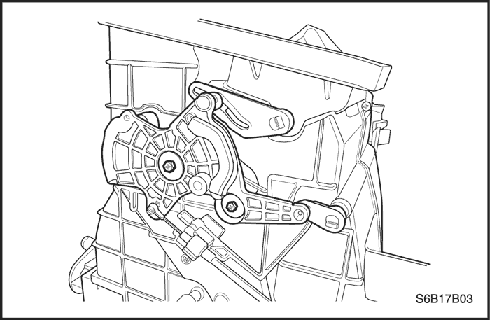
- Desconecte el pasacables del calefactor/antivaho de la patilla.
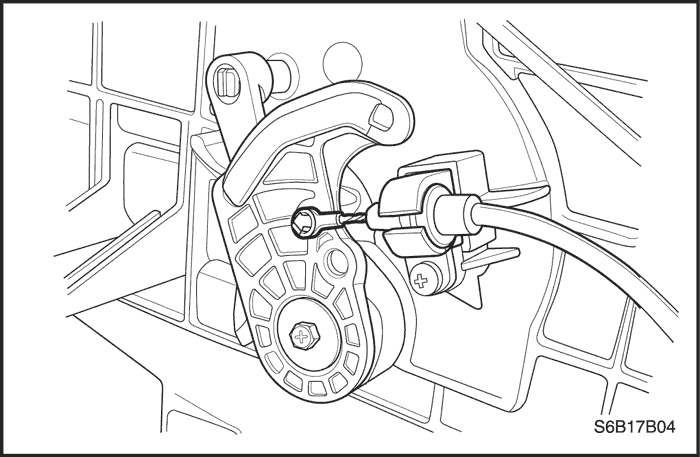
procedimiento de montaje
- Conecte el pasacables del calefactor/antivaho a la patilla y el alojamiento del cable a la corredera.
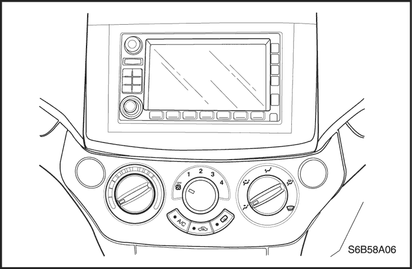
- Monte el controlador del HVAC. Consulte el apartado "Conjunto de control" de esta sección.
- Monte el equipo de sonido. Consulte la Sección 9F, Equipo de sonido.
- Monte el panel de extremo del salpicadero.
- Conecte el cable negativo de la batería.
- Accione los sistemas de calefacción/refrigeración para verificar que funcionan correctamente.
Ajuste del cable de temperatura
Puesto que el cable y el alojamiento del mismo tienen una longitud fija, es imposible ajustar el cable de control de temperatura.
El varillaje de la caja del distribuidor de aire/calefactor tampoco se puede ajustar.
Si se sospecha que hay alguna avería, compruebe el funcionamiento correcto del controlador y las compuertas mecánicas del conjunto de la caja del distribuidor de aire/calefactor.
Conjunto de control
Procedimiento de desmontaje
- Desconecte el cable negativo de la batería.
- Desmonte el equipo de sonido. Consulte la Sección 9F, Equipo de sonido.
- Quite los tornillos de fijación inferior derecho e inferior izquierdo del controlador.
- Extraiga el controlador para dejar espacio y poder desmontar el cable.

- Desconecte los cables de control mecánicos haciendo palanca ligeramente en el pasacables. Desenganche el alojamiento del cable de la corredera mecánica. Anote la ubicación de los cables y los alojamientos para facilitar su instalación.
- Desenchufe los conectores eléctricos.
procedimiento de montaje
- Enchufe los conectores eléctricos en los enchufes que hay en la parte posterior del controlador.
- Sujete los alojamientos de los cables mecánicos en sus posiciones de control originales.
- Presione el pasacables del extremo sobre la patilla.
- Inserte el controlador con cuidado en su posición en la consola central.
- Coloque los tornillos de fijación inferior derecho e inferior izquierdo.
Apretar
Apriete los tornillos de fijación del conjunto de control hasta 3 N•m (27 lb-pulg.).
- Monte el equipo de sonido. Consulte la Sección 9F, Equipo de sonido.
- Conecte el cable negativo de la batería.
- Conecte el cable negativo de la batería.
- Seleccione todas las posiciones del controlador para asegurarse de que funciona correctamente.
- Seleccione todas las posiciones del controlador para asegurarse de que funciona correctamente.
Motor del ventilador
Resistencia del motor del ventilador
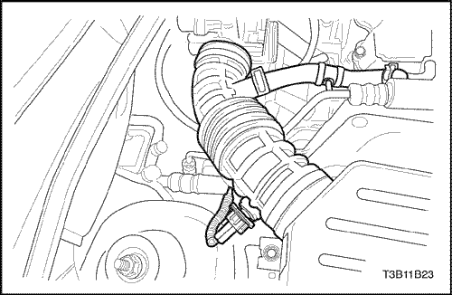
Transductor de presión A/C
Procedimiento de desmontaje
- Desconecte el cable negativo de la batería.
- Quite los tornillos de la carcasa del filtro del aire y desmonte el conjunto de dicha carcasa.
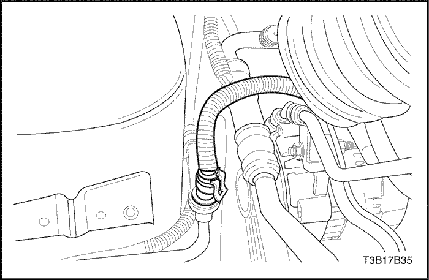
- Libere el cierre del conector y extraiga el conector del cable del transductor del aire acondicionado (A/A).
- Sujete el tetón del racor de la tubería con una llave y con otra llave desmonte el transductor de presión del aire acondicionado.
- Deseche la junta tórica.
procedimiento de montaje
- Coloque una junta tórica nueva en el transductor de presión del aire acondicionado.
- Monte el transductor de presión del aire acondicionado.
Apretar
Apriete los tornillos del transductor de presión (usando dos llaves de apriete) hasta 8 N•m (71 lb-pulg.).
- Monte el conector eléctrico.
- Coloque los tornillos de la carcasa del filtro del aire y monte el conjunto de dicha carcasa.
Apretar
Apriete los tornillos de fijación del conjunto de la carcasa del filtro de aire hasta 12 N•m (106 lb-pulg.).
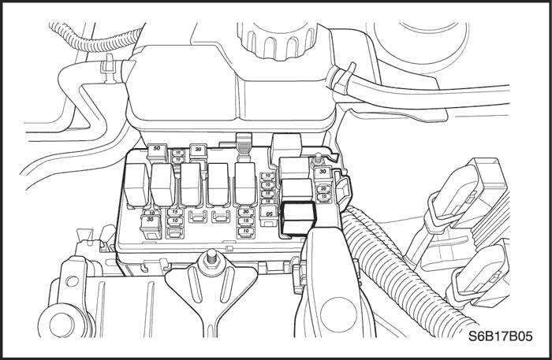
Relé del compresor de A/C
Procedimiento de desmontaje
- Desconecte el cable negativo de la batería.
- El relé está situado en la caja de conexiones del compartimento motor en el lado derecho.
- Tire del relé hacia arriba en línea recta y sáquelo.
procedimiento de montaje
- Alinee los contactos del terminal del relé con el receptáculo base.
- Empuje el relé en la base hasta que quede acoplado.
- Conecte el cable negativo de la batería.
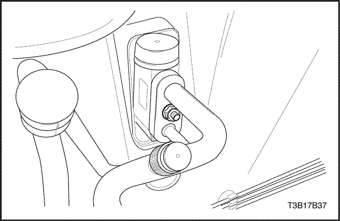
Válvula de expansión A/C
Procedimiento de desmontaje
- Desconecte el cable negativo de la batería.
- Recupere el refrigerante. Consulte el apartado "Procedimientos de descarga, adición de aceite, evacuación y carga para el sistema de aire acondicionado" de esta sección.
- Quite la tuerca de fijación del racor del tubo de líquido del evaporador en el tabique cortafuegos.
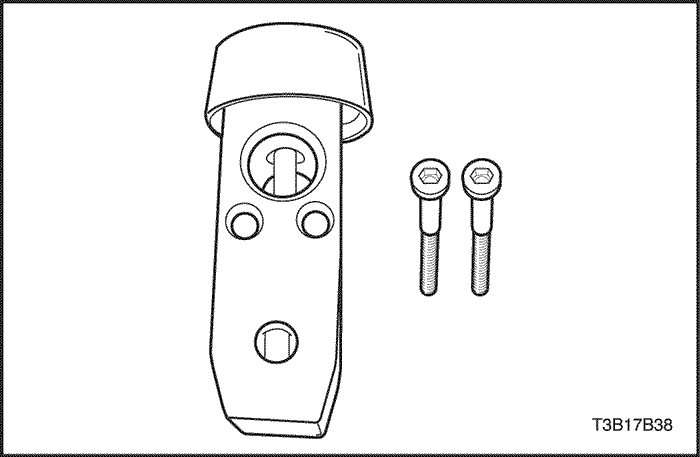
- Quite los tornillos de fijación del conector de la válvula de expansión.
- Desmonte la válvula de expansión.
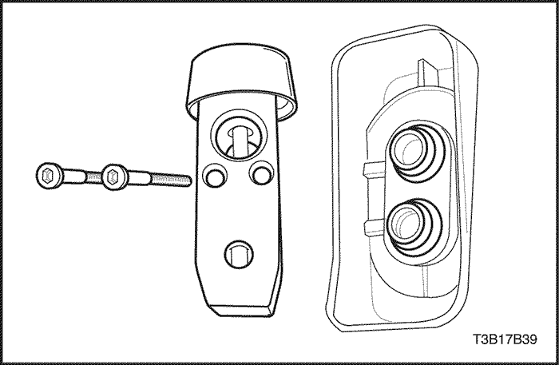
- Deseche las juntas tóricas.
procedimiento de montaje
- Limpie las superficies de las juntas tóricas para eliminar la suciedad o la contaminación.
- Coloque juntas tóricas nuevas en los tubos del evaporador.
- Monte una válvula de expansión nueva en los tubos del evaporador.
- Coloque los tornillos de fijación de la válvula de expansión.
Apretar
Apriete los tornillos de fijación de la válvula de expansión hasta 12 N•m (106 lb-pulg.).
- Coloque la tuerca de fijación del racor del tubo del evaporador en el tabique cortafuegos.
Apretar
Apriete la tuerca de fijación del racor del tubo del evaporador hasta 15 N•m (11 lb-pulg.).
- Conecte el cable negativo de la batería.
- Vacíe y vuelva a cargar el sistema. Consulte el apartado "Procedimientos de descarga, adición de aceite, evacuación y carga para el sistema de aire acondicionado" de esta sección.
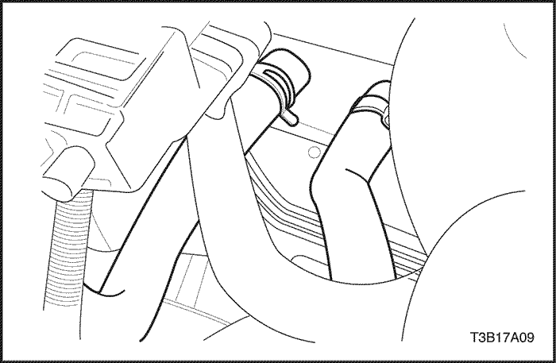
Conjunto de la caja del distribuidor de aire/calefactor
Procedimiento de desmontaje
- Desconecte el cable negativo de la batería.
- Desmonte el conjunto soporte del panel de instrumentos. Consulte la Sección 9E, Instrumentación/información para el conductor.
- Vacíe el sistema de refrigeración. Consulte la Sección 1D, Sistema de refrigeración del motor.
- Recupere el refrigerante. Consulte el apartado "Procedimientos de descarga, adición de aceite, evacuación y carga para el sistema de aire acondicionado" de esta sección.
- Comprima las abrazaderas de las mangueras del calefactor en el tabique cortafuegos y deslice las abrazaderas hacia el motor.
- Retire las dos mangueras del calefactor de las tuberías del núcleo en el tabique cortafuegos.
- Gire el manguito de drenaje de condensación y saque la manguera.
- Quite las tuercas que sujetan el manguito de aspiración del A/A y el racor del tubo del evaporador en el tabique cortafuegos.

- Desde el lado del motor del tabique cortafuegos, quite los tornillos que sujetan el conjunto de la caja del distribuidor de aire/calefactor al tabique cortafuegos.
- Desmonte el conjunto de la caja del distribuidor de aire/calefactor del vehículo.
procedimiento de montaje
- Limpie las superficies de las juntas tóricas para eliminar la suciedad y la contaminación.
- Coloque dos juntas tóricas nuevas en el manguito de aspiración del A/A y el tubo del evaporador en el tabique cortafuegos del compartimento motor.
- Monte el conjunto de la caja del distribuidor de aire/calefactor y apriete los tornillos.
Apretar
Apriete los tornillos de fijación del conjunto de la caja del distribuidor de aire/calefactor (lado del tabique cortafuegos) hasta 4 N•m (35 lb-pulg.).
- Monte el manguito de aspiración del A/A y los tubos del evaporador en el racor de la brida del evaporador y apriete la tuerca .
Apretar
Apriete la tuerca del racor del tubo del evaporador hasta 15 N•m (11 lb-pie.).
- Conecte las dos mangueras del calefactor a los tubos del núcleo del calefactor.
- Deslice las abrazaderas de las mangueras del calefactor en su posición.
- Monte el manguito de drenaje de condensación de la caja.
- Monte el conjunto soporte del panel de instrumentos. Consulte la Sección 9E, Instrumentación/información para el conductor.
- Llene el sistema de refrigeración.
- Conecte el cable negativo de la batería.
- Vacíe y vuelva a cargar el sistema de A/A. Consulte el apartado "Procedimientos de descarga, adición de aceite, evacuación y carga para el sistema de aire acondicionado" de esta sección.
- Accione el control del HVAC para verificar el funcionamiento adecuado de los sistemas de calefacción y refrigeración.
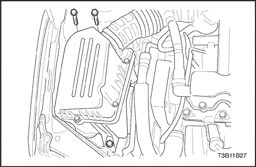
Tubería de alta presión del aire acondicionado
Procedimiento de desmontaje
- Desconecte el cable negativo de la batería.
- Recupere el refrigerante. Consulte el apartado "Procedimientos de descarga, adición de aceite, evacuación y carga para el sistema de aire acondicionado" de esta sección.
- Quite los tornillos de la carcasa del filtro de aire y desmonte el conjunto carcasa del filtro.
- Desenchufe el conector eléctrico del transductor de presión.
- Quite la tuerca de fijación del racor del tubo de líquido del evaporador en el tabique cortafuegos.
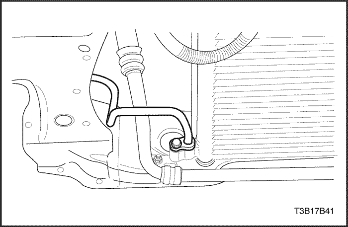
- Quite el tornillo de fijación del racor del tubo de líquido al condensador.
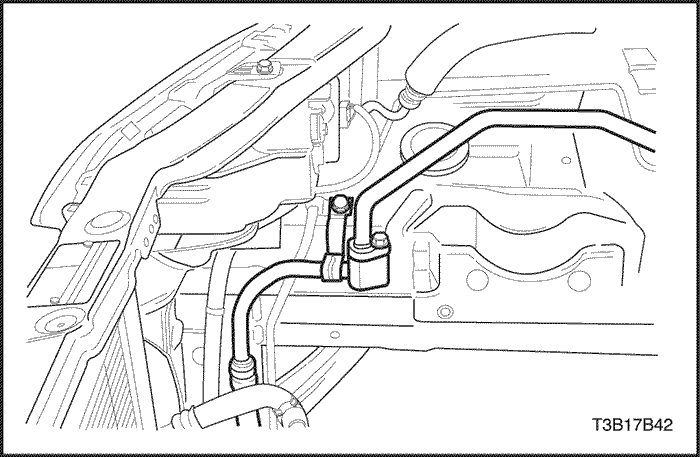
- Quite la tuerca de fijación del manguito de aspiración de refrigerante y el racor del tubo de líquido.
- Quite el tornillo de la abrazadera del tubo del evaporador.
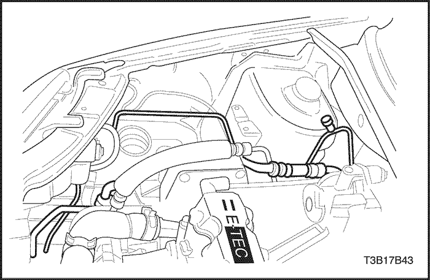
- Retire el tubo del evaporador y manguito de aspiración de refrigerante.
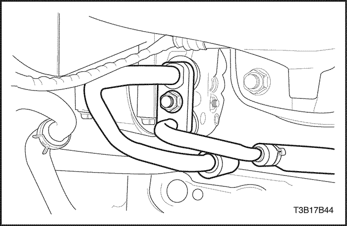
- Quite la tuerca de fijación entre los manguitos de aspiración y descarga de refrigerante y el conector del compresor (se muestra el compresor V5, compresor SP10 similar).
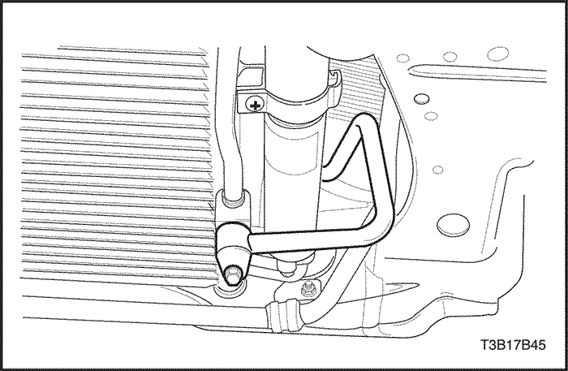
- Quite el tornillo del racor del manguito de descarga de refrigerante en el condensador.
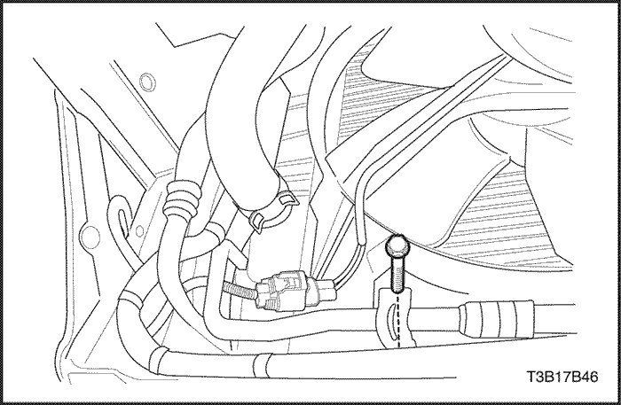
- Quite el tornillo de la abrazadera del manguito de descarga de refrigerante.
- Retire el manguito de descarga de refrigerante.
procedimiento de montaje
- Coloque en el vehículo la sección del manguito de aspiración de refrigerante.
- Monte una junta tórica nueva en el conector del condensador.
- Monte una junta tórica nueva entre el condensador de líquido y el racor del tubo de la placa del evaporador.
- Coloque el tornillo de la abrazadera del manguito de descarga de refrigerante.
Apretar
Apriete el tornillo de la abrazadera de sujeción del manguito de descarga de refrigerante hasta 8 N•m (71 lb-pulg.).
- Coloque el tornillo del racor del manguito de descarga de refrigerante en el condensador.
Apretar
Apriete el tornillo del racor del manguito de descarga de refrigerante hasta 16 N•m (12 lb-pulg.).
- Coloque la tuerca de fijación entre los manguitos de aspiración y descarga de refrigerante y el conector del compresor (se muestra el compresor V5, compresor SP10 similar).
Apretar
- Apriete la tuerca de fijación entre los manguitos de aspiración y descarga de refrigerante y el conector del compresor hasta 33 N•m (24 lb-pie) (compresor V5 sólo).
- Apriete los tornillos de fijación entre los manguitos de aspiración y descarga de refrigerante y el conector del compresor hasta 33 N•m (24 lb-pie) (compresor SP10 sólo).
- Coloque la tuerca de fijación del racor del manguito de aspiración de refrigerante.
Apretar
Apriete la tuerca de fijación del racor del manguito de aspiración de refrigerante hasta 15 N•m (11 lb-pie.).
- Coloque el tornillo de fijación del racor del tubo de líquido al condensador.
Apretar
Apriete el tornillo de fijación del racor del tubo de líquido al condensador hasta 14 N•m (10 lb-pie).
- Coloque la tuerca de fijación del racor del tubo del evaporador en el tabique cortafuegos.
Apretar
Apriete la tuerca de fijación del racor del tubo del evaporador hasta 15 N•m (11 lb-pie.).
- Enchufe el conector eléctrico al transductor de presión.
- Monte el conjunto de la carcasa del filtro de aire con sus tornillos de fijación.
Apretar
Apriete los tornillos de fijación del conjunto de la carcasa del filtro de aire hasta 12 N•m (106 lb-pulg.).
- Conecte el cable negativo de la batería.
- Vacíe y vuelva a cargar el sistema de A/A. Consulte el apartado "Procedimientos de descarga, adición de aceite, evacuación y carga para el sistema de aire acondicionado" de esta sección.
Mangueras del calefactor
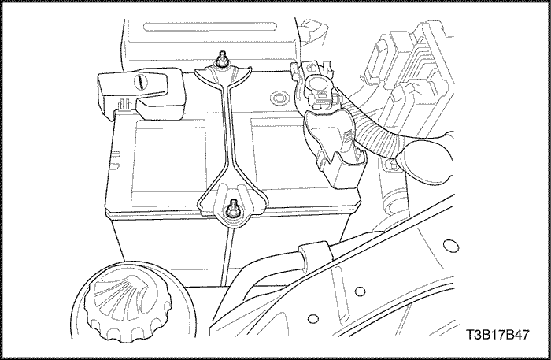
Núcleo del calefactor
Procedimiento de desmontaje
- Desconecte el cable negativo de la batería.
- Desmonte el conjunto soporte del panel de instrumentos. Consulte la Sección 9E, Instrumentación/información para el conductor.
- Desmonte el conjunto de la caja del distribuidor de aire/calefactor. Consulte "Conjunto de la caja del distribuidor de aire/calefactor" de esta sección.

Aviso: Manipule la caja con cuidado para no dañar las palancas del varillaje.
- Desmonte el núcleo del calefactor del conjunto de la caja del distribuidor de aire/calefactor.
procedimiento de montaje
- Monte el núcleo del calefactor en el conjunto de la caja del distribuidor de aire/calefactor.
- Monte la el conjunto de la caja del distribuidor de aire/calefactor. Consulte "Conjunto de la caja del distribuidor de aire/calefactor" de esta sección.
- Monte el conjunto soporte del panel de instrumentos. Consulte la Sección 9E, Instrumentación/información para el conductor.
- Llene el sistema de refrigeración. Consulte la Sección 1D, Sistema de refrigeración del motor.
- Conecte el cable negativo de la batería.
- Vacíe y vuelva a cargar el sistema de A/A. Consulte el apartado "Procedimientos de descarga, adición de aceite, evacuación y carga para el sistema de aire acondicionado" de esta sección.
Núcleo de evaporador
Procedimiento de desmontaje
- Desconecte el cable negativo de la batería.
- Desmonte el conjunto soporte del panel de instrumentos. Consulte la Sección 9E, Instrumentación/información para el conductor.
Aviso: Manipule la caja con cuidado para no dañar el varillaje de mando de las compuertas.
- Desmonte el conjunto de la caja del distribuidor de aire/calefactor. Consulte el apartado "Conjunto de la caja del distribuidor de aire/calefactor" de esta sección.

- Quite los tornillos que sujetan la tapa de la carcasa del evaporador.
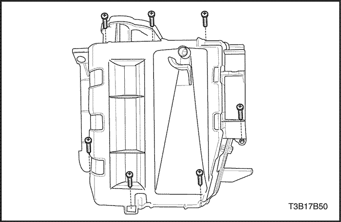
- Desmonte la tapa.
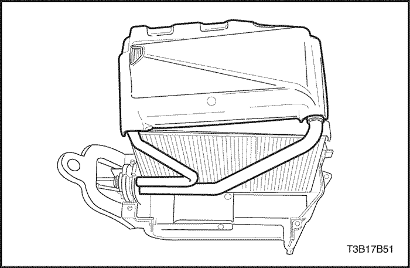
- Deslice la placa de apoyo de la brida del evaporador hacia arriba para facilitar el desmontaje del evaporador.
- Desmonte el evaporador de la carcasa.
procedimiento de montaje
- Coloque juntas tóricas nuevas en los tubos del evaporador.
- Monte el núcleo del evaporador en la carcasa. Centre la brida del evaporador en la abertura de la carcasa.
- Coloque la tapa de la carcasa del núcleo del evaporador con sus tornillos.
- Monte la caja del distribuidor de aire/calefactor. Consulte el apartado "Conjunto de la caja del distribuidor de aire/calefactor" de esta sección.
- Monte el conjunto soporte del panel de instrumentos. Consulte la Sección 9E, Instrumentación/información para el conductor.
- Conecte el cable negativo de la batería.
- Vacíe y vuelva a cargar el sistema de A/A. Consulte el apartado "Procedimientos de descarga, adición de aceite, evacuación y carga para el sistema de aire acondicionado" de esta sección.
Compresor
Procedimiento de desmontaje
- Desconecte el cable negativo de la batería.
- Descargue y recupere el refrigerante. Consulte el apartado "Procedimientos de descarga, adición de aceite, evacuación y carga para el sistema de aire acondicionado" de esta sección.
- Quite la tuerca del racor de conexión del conjunto de manguitos del A/A del compresor (se muestra el compresor V5, compresor SP10 similar).
- Levante y apoye el vehículo adecuadamente.
- Desenchufe el conector eléctrico del compresor.
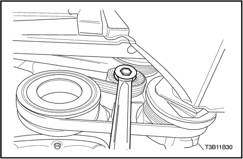
- Desmonte la correa de accionamiento de los accesorios (se muestra el compresor V5, compresor SP10 similar).
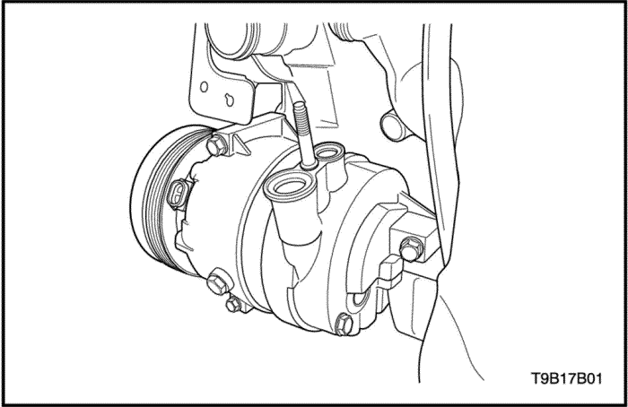
- Quite los tornillos que unen el compresor del A/A al soporte (se muestra el compresor V5, compresor SP10 similar).
- Desmonte el compresor (se muestra el compresor V5, compresor SP10 similar).
- Vacíe el aceite del compresor en un recipiente. Mida la cantidad de aceite que se ha vaciado y luego deseche el aceite usado.
procedimiento de montaje
- Añada aceite al compresor nuevo. Utilice la misma cantidad de aceite que se vació del viejo compresor.
- Monte el compresor (se muestra el compresor V5, compresor SP10 similar).
- Coloque los tornillos de fijación del compresor al soporte.
Apretar
Apriete el tornillo del soporte del compresor hasta 27 N• m (20 lb-pie).
- Coloque el tornillo de la correa de accionamiento de los accesorios (se muestra el compresor V5, compresor SP10 similar).
- Baje el vehículo.
- Monte una junta tórica nueva en el racor de conexión del conjunto de manguitos del A/A.
- Monte el racor de conexión del conjunto de manguitos del compresor y apriete la tuerca de fijación (se muestra el compresor V5, compresor SP10 similar).
Apretar
- Apriete la tuerca de fijación del racor del conjunto de manguitos del sistema de A/A hasta 33 N•m (24 lb-pie) (compresor V5 sólo).
- Apriete los tornillos de fijación entre los manguitos de aspiración y descarga de refrigerante y el conector del compresor hasta 33 N•m (24 lb-pie) (compresor SP10 sólo).
- Enchufe el conector eléctrico en el compresor.
- Conecte el cable negativo de la batería.
- Vacíe y vuelva a cargar el sistema de A/A. Consulte el apartado "Procedimientos de descarga, adición de aceite, evacuación y carga para el sistema de aire acondicionado" de esta sección.

Condensador (con Receptor-secador)
Procedimiento de desmontaje
- Desconecte el cable negativo de la batería.
- Descargue y recupere el refrigerante. Consulte el apartado "Procedimientos de descarga, adición de aceite, evacuación y carga para el sistema de aire acondicionado" de esta sección.
- Quite el tornillo de fijación del racor del tubo de líquido al condensador.
- Quite el tornillo del racor del manguito de descarga de refrigerante en el condensador.
- Desmonte el radiador. Consulte la Sección 1D, Sistema de refrigeración del motor.
- Tape todas las aberturas para evitar la entrada de suciedad.
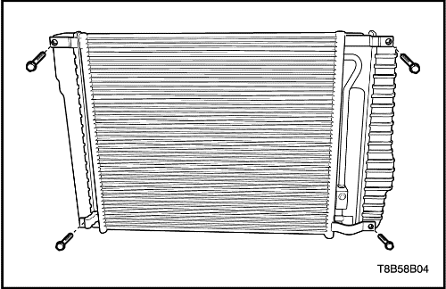
- Quite los tornillos de la fijación del condensador.
- Extraiga el condensador del radiador.
procedimiento de montaje
Importante: No reutilice la junta tórica.
- Instale el condensador en el radiador.
- Coloque los tornillos de la fijación del condensador.
Apretar
Apriete los tornillos de la fijación del condensador hasta 7-10 N•m (62-89 lb-pulg.).
- Monte el radiador en el vehículo. Consulte la Sección 1D, Sistema de refrigeración del motor.
- Coloque el tornillo del racor del manguito de descarga de refrigerante en el condensador.
Apretar
Apriete el tornillo del racor del manguito de descarga de refrigerante hasta 16 N•m (12 lb-pulg.).
- Coloque el tornillo de fijación del racor del tubo de líquido al condensador.
Apretar
Apriete el tornillo de fijación del racor del tubo de líquido al condensador hasta 14 N•m (10 lb-pie).
- Conecte el cable negativo de la batería.
- Vacíe y vuelva a cargar el sistema de A/A. Consulte el apartado "Procedimientos de descarga, adición de aceite, evacuación y carga para el sistema de aire acondicionado" de esta sección.
| © Copyright Chevrolet Europe. Reservados todos los derechos |